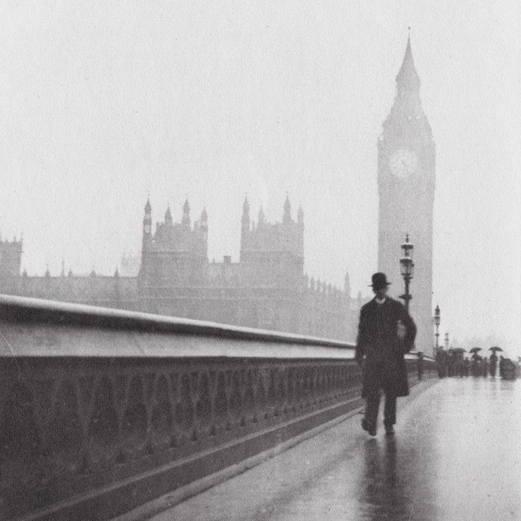

The Eclectic Polymath Podcast · Archive
#166 Big Ben: How the Clock Changed the Way We Live

About this episode
Time feels natural now. But the way we organize our lives around minutes, schedules, deadlines, and synchronized clocks is a human invention.
This episode uses Big Ben as a doorway into the history of mechanical time and the world it helped create. We trace the shift from lives organized around daylight, seasons, and tasks to a society ruled by precision—through mechanical clocks, railways, factories, standardized time zones, and eventually atomic clocks and GPS.
At the center is a bigger question: what happens when time stops being something we experience and becomes something we measure, sell, regulate, and obey? Big Ben becomes more than a landmark—it becomes a symbol of the discipline that helped structure industrial life, global commerce, and the modern relationship between humans and the clock.
Key points
- This episode uses Big Ben as a doorway into the history of mechanical time and the world it helped create.
- We trace the shift from lives organized around daylight, seasons, and tasks to a society ruled by precision—through mechanical clocks, railways, factories, standardized time zones, and eventually atomic clocks and GPS.
- Big Ben becomes more than a landmark—it becomes a symbol of the discipline that helped structure industrial life, global commerce, and the modern relationship between humans and the clock.